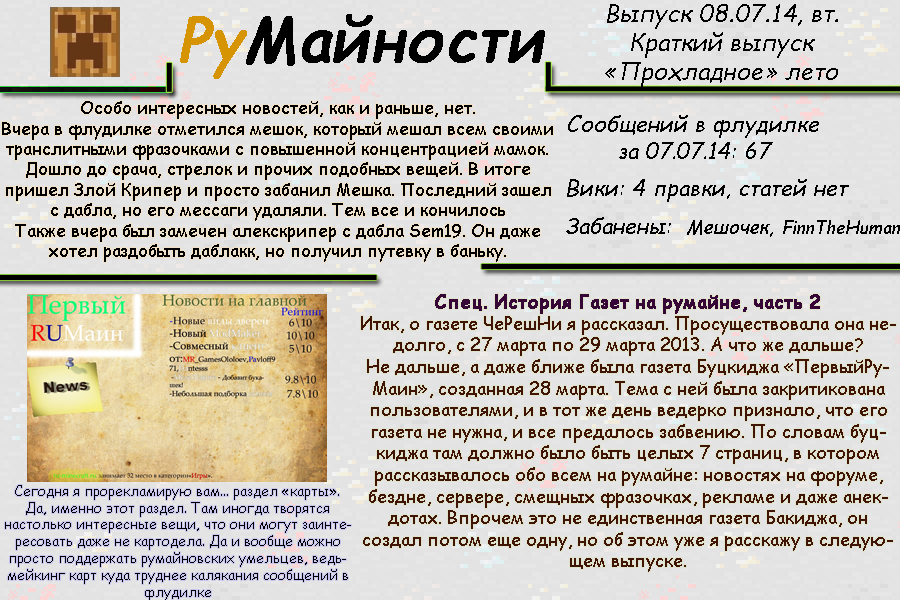

Почему лето прохладное? Да хотя бы потому, что ничего интересного и не происходит.
Мудрец
Сводка
Страниц в ФЧ за 7 июля: 67
Вики: 4 правки, 0 статей
Забанены: Мешочек, FinnTheHuman
Новости
Особо интересных новостей, как и раньше, нет. Вчера в флудилке отметился мешок, который мешал всем своими транслитными фразочками с повышенной концентрацией мамок. Дошло до срача, стрелок и прочих подобных вещей. В итоге пришел Злой Крипер и просто забанил Мешка. Последний зашел с дабла, но его мессаги удаляли. Тем все и кончилось Также вчера был замечен алекскрипер с дабла Sem19. Он даже хотел раздобыть даблакк, но получил путевку в баньку.
Сегодня я прорекламирую вам... раздел «карты». Да, именно этот раздел. Там иногда творятся настолько интересные вещи, что они могут заинтересовать даже не картодела. Да и вообще можно просто поддержать румайновских умельцев, ведьмейкинг карт куда труднее калякания сообщений в флудилке
Спец. История создания газет на румайне, часть 2
Итак, о газете ЧеРешНи я рассказал. Просуществовала она недолго, с 27 марта по 29 марта 2013. А что же дальше?
Не дальше, а даже ближе была газета Буцкиджа «ПервыйРуМаин», созданная 28 марта. Тема с ней была закритикована пользователями,
и в тот же день ведерко признало, что его газета не нужна, и все предалось забвению.
По словам буцкиджа там должно было быть целых 7 страниц, в котором рассказывалось обо всем на румайне:
новостях на форуме, бездне, сервере, смещных фразочках, рекламе и даже анекдотах.
Впрочем это не единственная газета Бакиджа, он создал потом еще одну, но об этом уже я расскажу в следующем выпуске.
Как это было
